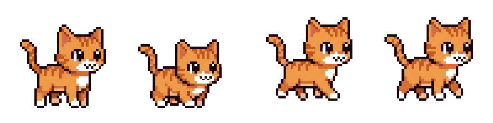
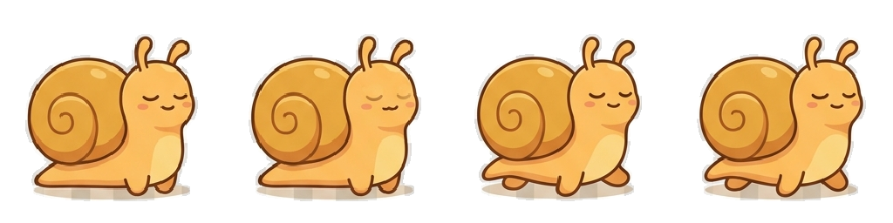
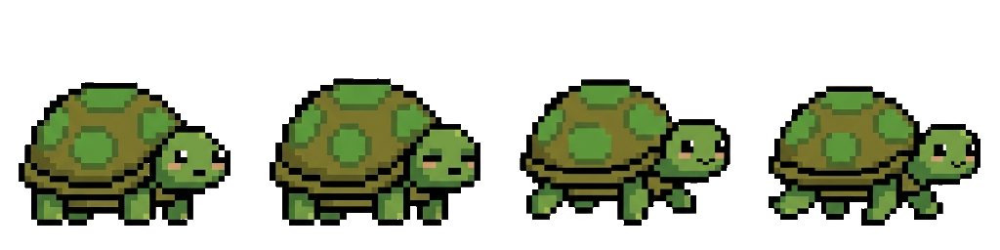
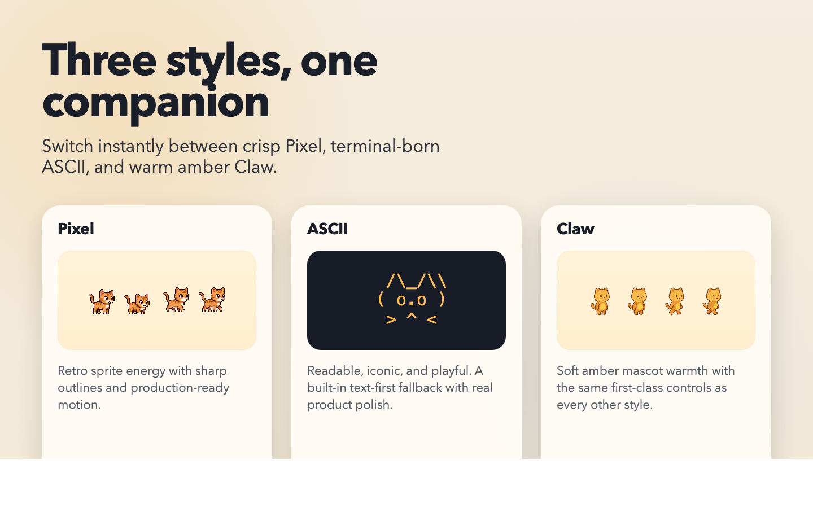
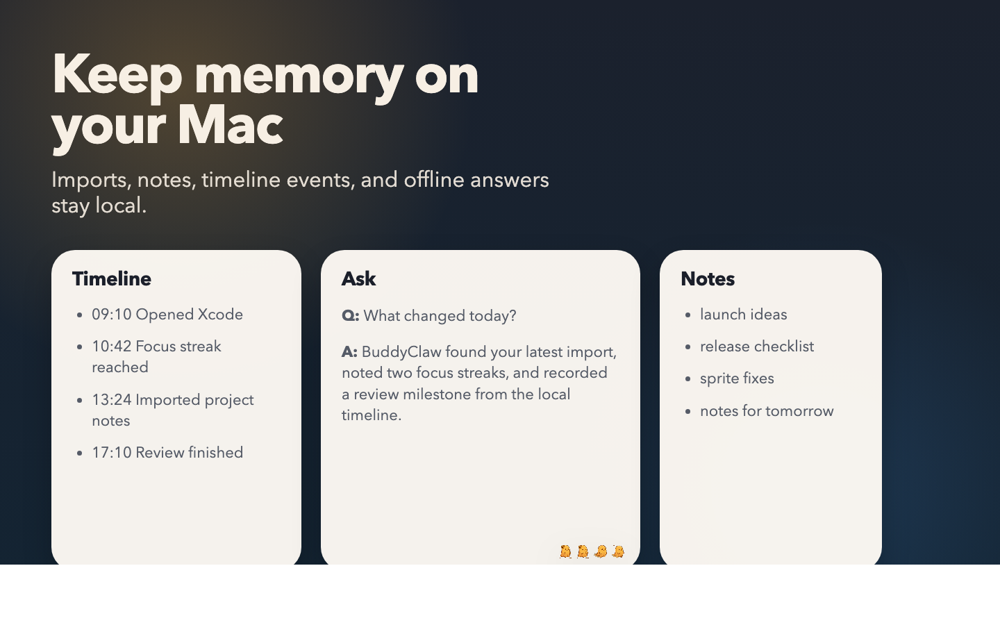

Pick a pet fast
BuddyClaw keeps the core controls in the menu bar, so switching pet, style, and size takes seconds.
Pick a companion, switch between Pixel, ASCII, and Claw styles, keep local memory on-device, and review your day without leaving the desktop-pet experience.



BuddyClaw keeps the core controls in the menu bar, so switching pet, style, and size takes seconds.
Imports, notes, timeline events, and offline extractive answers stay on your Mac.
The Mac App Store build keeps activity capture off by default until you explicitly enable it.

